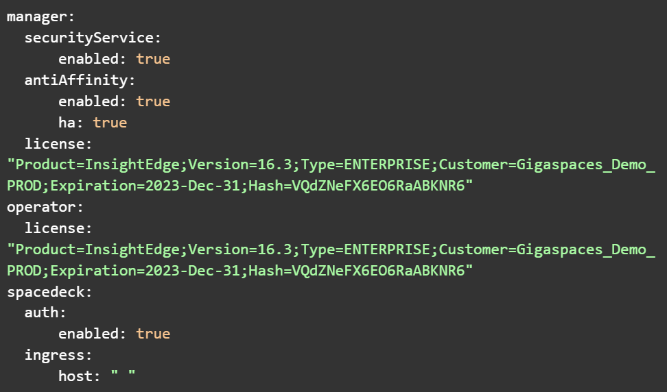
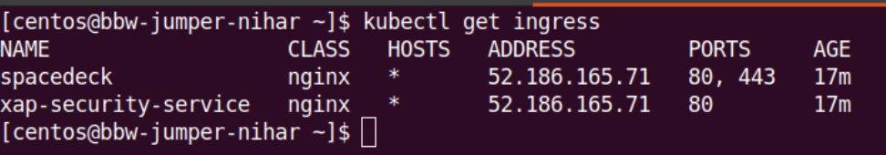
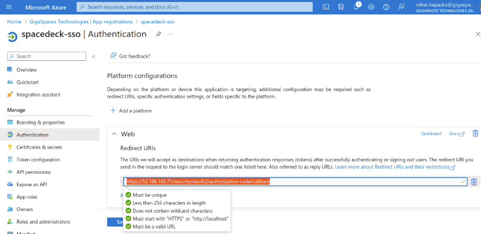
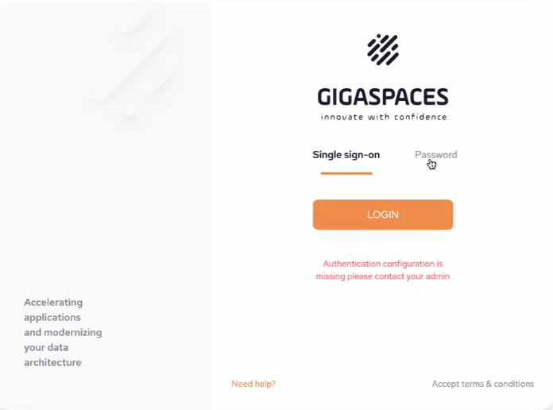

<?xml version="1.0" encoding="utf-8"?>
<html xmlns:MadCap="http://www.madcapsoftware.com/Schemas/MadCap.xsd">
    <head>
    </head>
    <body>
        <map id="map1">
            <area shape="rectangle" coords="31,228,438,655" dragDirection="0" />
            <area shape="rectangle" coords="486,228,891,656" dragDirection="0" href="gs-ops-manager-cluster-overview.html" />
            <area shape="rectangle" coords="940,227,1349,656" dragDirection="0" />
        </map>
        <h1 class="tc-pagetitle">SpaceDeck – SSO&#160;Setup Using Azure Active Directory</h1>
        <p>In order to configure your SSO using Azure Active Directory, follow these steps:</p>
        <p>Add the following Helm repositories (skip this step if they have already been added):</p><pre xml:space="preserve">helm repo add dih
https://s3.amazonaws.com/resources.gigaspaces.com/helm-charts-dih
helm repo update dih
helm repo add ingress-nginx https://kubernetes.github.io/ingress-nginx
helm repo update ingress-nginx</pre>
        <p>Install Ingress:</p><pre xml:space="preserve">helm upgrade --install ingress-nginx ingress-nginx/ingress-nginx -f DIH/helm/ingress-controller-tcp.yaml</pre>
        <p>Output of ingress-controller-tcp.yaml:</p><pre xml:space="preserve">tcp:
  8090: "default/xap-manager-service:8090"
  3030: "default/grafana:3000"
  3000: "default/spacedeck:3000"
  8080: "default/redpanda:8080"
  6080: "default/di-manager:6080"
  6081: "default/di-mdm:6081"
  6082: "default/di-subscription-manager:6082"
  8181: "default/flink-jobmanager:8081"
  5432: "default/xap-dgw-service:5432"
  11701: "default/iidr-kafka:11701"
  10101: "default/iidr-as:10101"
  9000: "default/xap-security-service:9000"
</pre>
        <p>Install the DIH Kubernetes Umbrella:</p><pre xml:space="preserve">helm install dih dih/dih --version <MadCap:variable name="Versions.helm-version-MX" /> --set tags.iidr=false -f dih-umbrella.yaml</pre>
        <p>Output of dih-umbrella-yaml:</p>
        <p>
            
        </p>
        <p>Generate a self-sign certificate</p><pre xml:space="preserve">openssl req -x509 -nodes -days 9999 -newkey rsa:2048 -keyout certs/ingress-tls.key -out certs/ingress-tls.crt</pre>
        <p>Create Kubernetes secret using <code>server.key</code> and<code> server.crt</code></p><pre xml:space="preserve">kubectl create secret tls ingress-cert --key=certs/ingress-tls.key --cert=certs/ingress-tls.crt -o yaml</pre>
        <p>Edit <code>xap-security-service</code> ingress and remove <b>spec.rules.host</b>:</p><pre xml:space="preserve">kubectl edit ingress xap-security-service</pre>
        <p>Edit spacedeck ingre4ss to add <b>tls</b> block:</p><pre xml:space="preserve">kubectl edit ingress spacedeck</pre>
        <p>Block to add under "space" at the same level as "ingressClassName":</p><pre xml:space="preserve">tls:
  - hosts:
      - default.gigaspaces.net
      secretName: ingress-cert</pre>
        <p>Expected output:</p>
        <p>
            
        </p>
        <h2>App Registration in the Azure Active Directory</h2>
        <p>Open the Azure dashboard and navigate to the Azure active directory.</p>
        <p>Go to App registration and follow the steps.</p>
        <p>Generate a secret.</p>
        <p>Provide a callback URI. &#160;Example: https://&lt;INGRESS_IP&gt;/security/oauth2/authorization-code/callback</p>
        <p>
            
        </p>
        <h2>SpaceDeck Configuration</h2>
        <p>For details about the Connection fields refer to <a href="spacedeck-admin.html#GeneralSetup">SpaceDeck Administration </a></p>
        <ul>
            <li>
                <p>Open SpaceDeck using the ingress IP (https://&lt;INGRESS_IP&gt;/) and provide Settings-&gt;OpenID connection parameters (login with root/password).</p>
            </li>
            <li>
                <p>Populate with the following:</p>
            </li>
        </ul>
        <ol>
            <li>
                <p><b>Redirect URI</b>: https://&lt;INGRESS_IP&gt;/security/oauth2/authorization-code/callback</p>
            </li>
            <li>
                <p><b>Issue URI</b>: Get it from Azure Active Dir -&gt; App registration -&gt; Endpoints</p>
            </li>
            <li>
                <p><b>Client Id</b>: Get it from Azure Active Dir -&gt; Certificates &amp; secrets</p>
            </li>
            <li>
                <p><b>Client Secret</b>: Get it from Azure Active Dir -&gt; Certificates &amp; secrets</p>
            </li>
            <li>
                <p>Click <b>Apply</b> and logout from SpaceDeck.</p>
            </li>
        </ol>
        <p>
            
        </p>
        <h2>Verification</h2>
        <p>From the SpaceDeck login screen select Single sign-on</p>
        <p>
            
        </p>
        <p>Your Microsoft credentials will be requested, then you will see your organizations authentication page. &#160;Upon successful login, it will redirect back to the&#160;SpaceDeck main page.</p>
        <p>&#160;</p>
    </body>
</html>